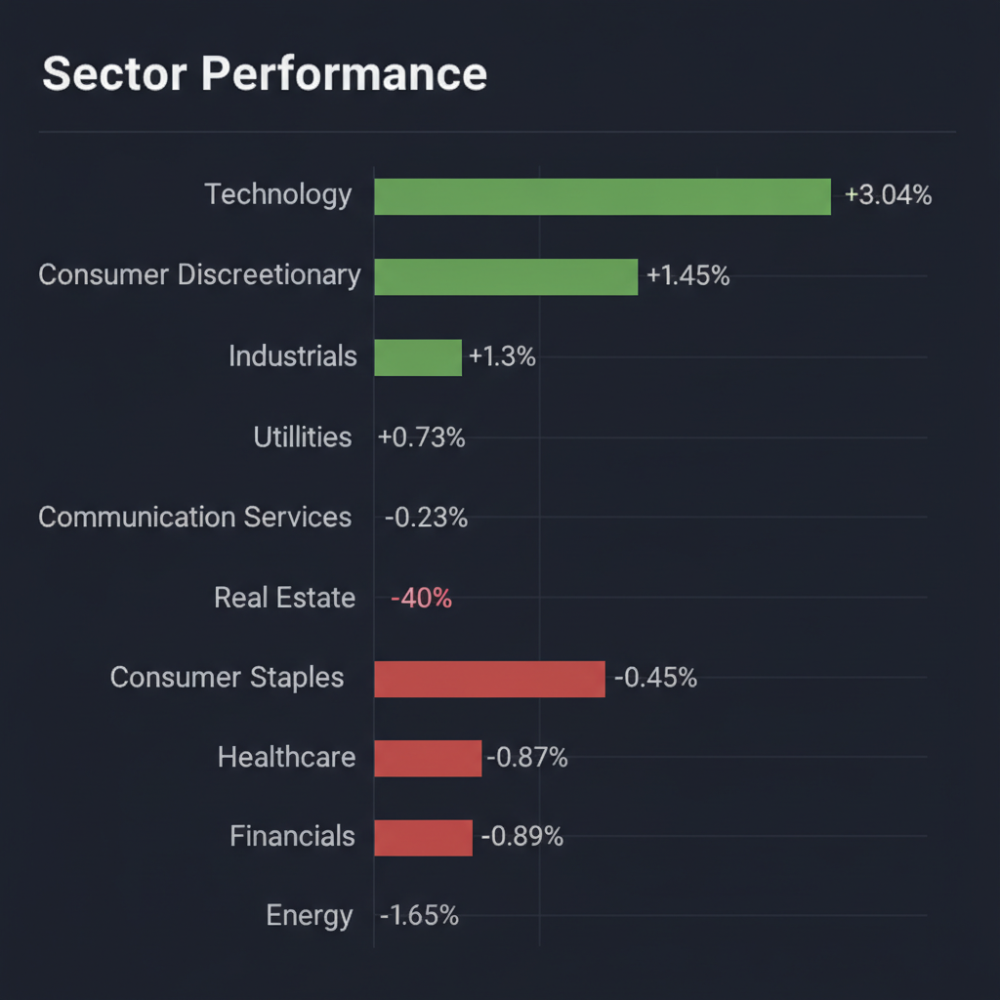
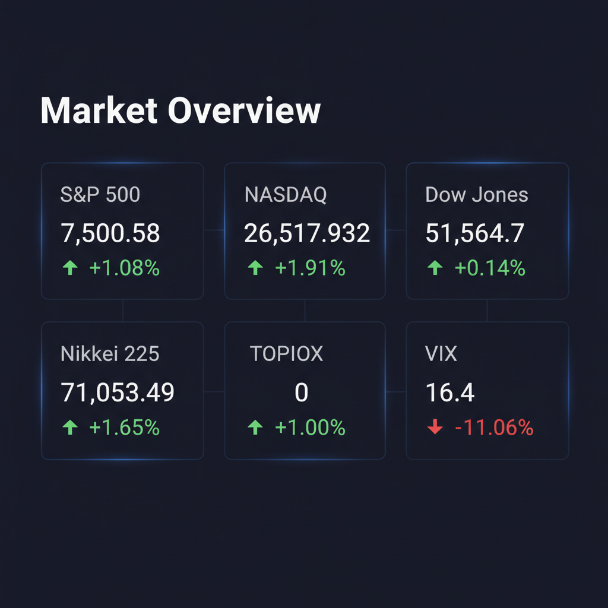

各エージェントがWeb調査結果を踏まえて独立に10段階評価した結果です。平均7以上=強気、4〜6.9=中立、4未満=弱気。
| 銘柄 | ファンダメンタルズアナリスト | テンバガーハンター | マクロエコノミスト | テクニカルストラテジスト | リスクマネージャー | 平均 | 判定 |
| 3046.T | 4 増収減益は懸念、期待先行の過熱感 | 5 増収減益で成長鈍化、割高感あり | 4 増収減益と期待先行で割高感強まる | 5 増収減益、期待先行で様子見局面 | 5 増収減益、期待先行で割高感あり |
4.6 | 中立 |
エージェントが推奨した中小型株について、Google検索で最新情報を調査した結果です。
ジンズホールディングス（3046.T）に関する最新情報を以下の観点でまとめました。
株式会社ジンズホールディングスは、メガネ専門店「JINS」を運営するSPA（製造小売業）です。機能性メガネと業界最安水準を強みに、ショッピングセンター・駅ビル・百貨店などを中心に国内外でアイウエア店舗を展開しています。海外事業は中華圏を軸としています。店舗数は780店舗を超えています。
* 事業内容: メガネの企画・生産・販売を行う国内アイウエア事業と、中国、台湾、香港、米国で事業を展開する海外アイウエア事業が主なセグメントです。 * 時価総額: 2026年6月18日時点で、約2,004億円です。 * 業界でのポジション: 小売業に属し、アイウエア市場において独自のビジネスモデルを確立しています。
2026年8月期中間期（2025年9月1日～2026年2月28日）の連結決算では、売上高が前年同期比12.7％増の505.12億円と二桁成長を達成しました。しかし、営業利益は49.32億円（前年同期比4.3％減）、経常利益は48.99億円（前年同期比6.2％減）、親会社株主に帰属する中間純利益は33.93億円（前年同期比10.3％減）と減益となりました。
* 売上: 2026年8月期中間期で505.12億円（前年同期比12.7％増）。 * 利益: 2026年8月期中間期で経常利益48.99億円（前年同期比6.2％減）。 * 成長率: 過去2年間で売上高は二期連続増収で平均増収率15.19%、営業利益も二期連続増益で平均57.95%の増益率を記録しています。 * 通期見通し: 2026年8月期通期では、増収増益を見込んでおり、年間配当も増配を予定しています。
直近の重要なニュースとしては、アナリストによる目標株価の引き上げが複数見られます。
* 2026年6月16日、日系大手証券がレーティングを「中立」に据え置きつつ、目標株価を5,700円から9,300円に引き上げました。 * 2026年6月8日には、欧州系大手証券がレーティング「強気」を継続し、目標株価を9,100円に引き上げています。 * 2026年6月5日には、米系大手証券がレーティング「強気」を継続し、目標株価を8,990円に引き上げました。 * 2026年6月17日には、SMBC日興が目標株価を引き上げ、紫外線シーズン終了後の売り上げに注目しているとの報道がありました。
2026年6月15日時点のレーティングコンセンサスは「強気」の水準（アナリスト数6人）、目標株価コンセンサスは7,798円となっています。
* 日系大手証券: レーティング「中立」据え置き、目標株価9,300円（2026年6月16日）。 * 欧州系大手証券: レーティング「強気」継続、目標株価9,100円（2026年6月8日）。 * 米系大手証券: レーティング「強気」継続、目標株価8,990円（2026年6月5日）。 * みんかぶのAI株価診断では、「割高」で「売り継続」のシグナルが出ています。
* 競合: 国内眼鏡小売市場は低価格競争から高付加価値製品へのシフトが見られ、市場は拡大傾向にありますが、競争は依然として存在します。 * 規制: 特定の上場会社として、インサイダー取引規制の重要事実の軽微基準については連結ベースの計数に基づいて判断されます。 * 財務上の懸念: 2026年8月期中間期では増収であったものの、利益面では減益となりました。 現金及び預金は31.58億円減少しています。 * 海外事業: 米国の通商政策による不透明感や、中国における不動産不況の長期化や消費意欲の低迷による景況感の悪化など、世界経済の動向が海外事業に影響を与える可能性があります。
2026年6月18日終値は8,440円で、前日比90円安（1.06%減）でした。 直近では、6月15日に8,780円の高値を付けていました。 株価トレンドの目先5日線は-1.27%となっています。 過去12四半期は業績が改善傾向にあり、売上高は前年同期比で拡大傾向にある一方、フリーキャッシュフローは増減が混在するものの直近では持ち直しの動きが見られます。 株価は最近のニュースによるアナリスト評価の引き上げなどを受けて、上昇の動きも見られます。
免責事項: 上記の情報は、投資判断の参考となる情報の提供を目的としたものであり、特定の銘柄の売買を推奨するものではありません。投資にあたっては、ご自身の判断と責任において行ってください。